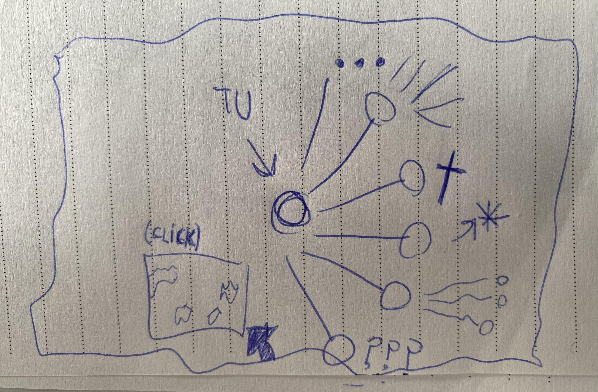

Acta v1.0 - 31/7/2024
Se finalizo con Internet Cave, Se tienen ideas para su *******, fueron retocados algunos errores en la tienda de productos y mas.
> Nivel Facil
> Nivel Medio
> Nivel Dificil
> Nivel Demoniaco
El juego cuenta con una sección de instrucciones.
Hace falta testear.
Se implementara lo antes posible su versión 2.5 con la intención de aportar mas contenido sobre la historia del videojuego.
6-7/8/2024 - Pequeña implementación estética
SoulArchive.com recibió una actualización estética basada en la implementación de iconos en las diferentes pestañas, nueva pantalla de carga para la sección de imagenes generadas y algunos cambios simples.
Futuras Actualizaciones SoulArchive.com
> Generador de personajes
> Nuevos minijuegos
> Mas enlaces redireccionables en el generador de imagenes
> Habitación 3D
> Coleccioanbles fisicos y virtuales
Envía tu idea a X
Internet Cave 2.5 9/8/2024
* Se implemento el primer Track producido por Ak1 y traido a la pagina de forma especial y exclusiva. Debido a ocacionarse ciertos problemas referidos al codigo base del videojuego, se opto por añadir la función de una forma alternativa.
* Se añadio una pieza correspondiente a la historia que desea contar el videojuego.
Mapa de Paginas web 13/8/2024
Se finalizo con la primera versión de la pagina web, tengo la buena noticia para decirme a mi, de que ya estamos mas cerca del comienzo que del principio conceptual, la pagina se comienza a volver fisica y con forma, los pensamientos de esta mente errante toman lugar en el planeta tierra.
Los enlaces se posicionaron sobre la querida pagina que no tiene fin, pronto mas entretenimiento.
